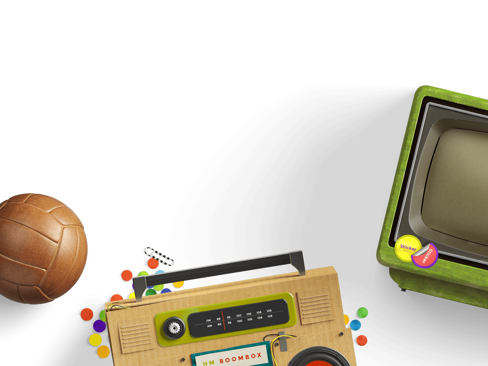

I feel life is about doing things you enjoy, with that said I feel lucky to be able to spend time doing something I truly enjoy. With everything I take on, I do to the absolute best of my current ability. My aim is to create things that're considered the gold standard, similar to how Pixar is looked at as the gold standard when it comes to 3-D films and animation.
Alongside doing design & development I welcome discussion and learning about psychology, business of creativity, health and so much more. I'd say my interest in user experience ties into a love of psychology where I can focus on understanding different types of people and having meaningful conversations all in order to solve a problem. Want to know more? Send me a message.
